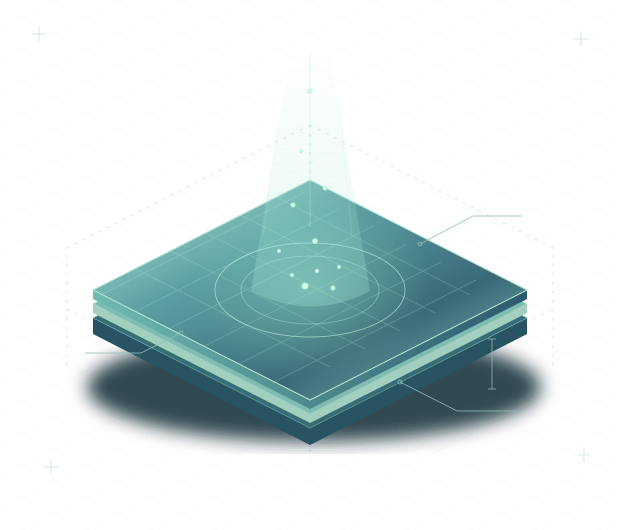

PLD
Pulsed laser deposition
Pioneer 180
Controlled growth of functional thin films through pulsed excimer-laser ablation.

Innovation Center for Nanoscience and Technology
Connecting materials, technology and people to explore what comes next in nanoscience.

Established in 2020 at the A. B. Nalbandyan Institute of Chemical Physics, NAS RA, ICNT brings advanced fabrication, characterization and computational modeling into one interdisciplinary environment.
The Center was created through a major grant program competitively funded by the Government of Armenia. Its work connects experimental research with education, practical laboratory training and international collaboration.
Thin-film growth, pattern transfer and device interconnection in one research environment.
Explore surface topography, vibrational signatures, particle size and electrochemical behavior.
Drying, centrifugation, thermal treatment, cleaning and the supporting tools for laboratory work.
Pioneer 180
Controlled growth of functional thin films through pulsed excimer-laser ablation.
RAITH 180
Direct-write lithography for nanoscale patterns, devices and experimental structures.
HORIBA OmegaScope
Nanoscale surface morphology and topography for thin films and material structures.
Connected spaces support the path from preparation and fabrication to analysis and discussion.
ISO 5 and ISO 8 infrastructure supports nanostructured material preparation, including PLD and DC/RF magnetron sputtering.
ExploreSubstrate and target preparation, electrochemical synthesis, sol-gel processing and other material preparation workflows.
+Modeling thin-film deposition and material behavior to guide the selection of experimental parameters.
+A dedicated meeting space for scientific exchange, coordination and collaborative research.
+Build and deepen partnerships with international institutions through collaborative research.
Develop educational programs and laboratory training that connect knowledge with real experiments.
Develop students’ practical skills, support scientific careers and contribute to a skilled technology workforce.
Two perspectives on our research environment.
For research collaboration, laboratory training and scientific cooperation, get in touch with the Center.
5/2 P. Sevak St., Yerevan 0014, Armenia
A. B. Nalbandyan Institute of Chemical Physics, NAS RA